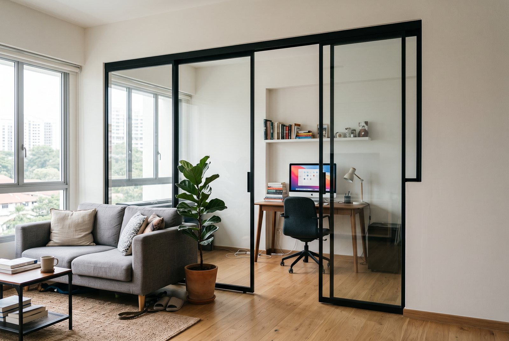

Glass partition walls: sliding panels, frames and what they cost

A glass partition divides a space without making it dark. It is how many owners carve a study out of a living room, close off a kitchen so cooking smells stay in, or separate a yard. On a recent RK E&C quote in Bidadari, a glass wall of two fixed and two sliding panels in clear tempered glass with a black frame came to $2,450. Larger partitions with more panels or heavier frames typically run higher.
What a glass partition costs
| Job | Price (SGD) | Source |
|---|---|---|
| Glass wall, 2 fixed + 2 sliding panels, clear tempered glass, black frame, round handle | $2,450 | RK E&C quote, Bidadari, October 2026 |
| Kitchen sliding door, clear tempered glass, 1 no | $1,675 – $1,775 | See shower screens |
| Larger aluminium-framed glass sliding doors and partitions | $2,500 – $5,000+ | See sliding doors |
Glass is cut and framed to your exact measurements, so it is made to order. That is why the Bidadari quote asked for 50% of the glass wall as a deposit on confirmation, with the balance on completion. Expect the same with most glass work.
Fixed and sliding: choosing the layout
Most partitions combine fixed panels, which stay put, with sliding panels that open the doorway. The questions that decide the layout:
- How wide does the opening need to be? Two sliding panels give a wider opening than one. For a study you walk in and out of, one is usually enough; for a kitchen you carry things through, two is easier.
- Where do the sliding panels park? They stack in front of the fixed panels when open, so think about what sits behind them.
- Top-hung or bottom track? A top-hung panel leaves a cleaner floor; a bottom track is often sturdier for heavy panels. Our sliding door guide covers the trade-off.
Frame and glass
- Black aluminium frames are the look most owners ask for now, often with slim grid lines. Silver and white are available too.
- Tempered glass is the standard for partitions and doors, because if it breaks it crumbles into small pieces rather than sharp shards.
- Clear, frosted, fluted or tinted. Clear keeps the space open. Frosted or fluted glass gives privacy for a study or a toilet-side partition while still letting light through. A privacy film on clear glass is a cheaper way to get part of the effect.
What to check before you order
- Airflow and aircon. Enclosing a room changes how air moves. A kitchen closed off with glass may need its own ventilation; a study closed off from the living room may need its own aircon or a gap that lets cool air in.
- Floor and ceiling. Uneven floors and ceilings are measured and allowed for in the frame. Check what sits where the track will run, such as a floor trap or skirting.
- Building rules. In HDB flats and condos, check what your estate or MCST allows before you install. We check this when we come to measure.
- Handles and locks. A simple round or bar handle is usual; a lock is an extra if the room needs one.
Frequently asked questions
How much does a glass partition cost in Singapore?
On a recent RK E&C quote in Bidadari, a glass wall of two fixed and two sliding panels in clear tempered glass with a black frame came to $2,450. Larger aluminium-framed glass sliding doors and partitions typically run $2,500 to $5,000 or more, depending on size, panel count and frame.
Is a glass partition safe?
Partitions and doors use tempered glass, which crumbles into small pieces rather than sharp shards if it breaks. Frosted or fluted glass, or a film, can add privacy.
Do I need to pay a deposit for a glass partition?
Usually. Glass is cut and framed to your measurements, so it is made to order. The Bidadari quote asked for 50% of the glass wall on confirmation and the balance on completion.
Can I put a glass partition in an HDB flat?
Many owners do, for studies and kitchens. Check what your estate allows before installing; we check this when we measure.
Should I choose a top-hung or bottom track sliding panel?
Top-hung panels leave a cleaner floor; bottom tracks are often sturdier for heavy panels. It depends on the panel size and what is above and below the opening.
Getting it done by RK E&C
RK E&C is a Singapore-registered renovation and handyman company (UEN 202442767D). We measure on site, advise on the layout and glass, and supply and install the partition. Glass work often goes with other jobs in the same renovation: sliding doors, drywall partitions where a solid wall suits better, or painting.
Send a photo of the opening and rough width and height through our contact form or WhatsApp.
Planning a glass partition?
Send a photo of the space and the rough measurements. We will suggest a layout and arrange a site measurement for a fixed quote.
The $2,450 figure is from an actual RK E&C quote in Bidadari dated October 2026. The kitchen sliding door and larger partition ranges are from our shower screen and sliding door guides. None of this is a quotation.